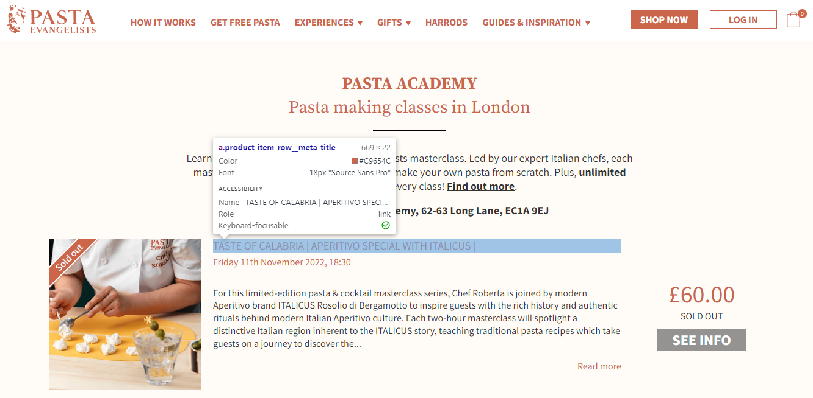
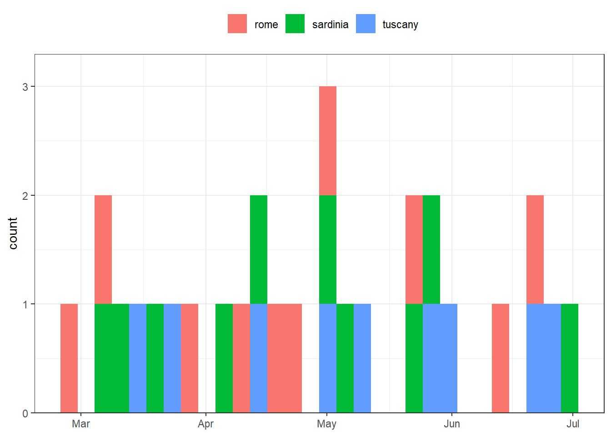

Purpose
Recently, my partner and I were looking to book a cooking experience as a Christmas treat, and we settled on the excellently reviewed Pasta Academy in London. We were looking for a beginner class in early 2023, but we were immediately met with an issue — there was no way to filter the booking list!
We could have sat and go through the list manually, perhaps noting down each of the beginner classes when we found them. This sounded like a bit of a faff, so I instead thought I’d scrape all of the courses and put them into a table. Some might argue that writing an R script to do this is even more of a faff, but I did it anyway!
This blog post shows how I scraped the data from the Pasta Academy website using rvest and then went on to tidy it using the tidyverse. You may find this a nice introduction to web scraping in R, and a nice application of data skills in “real life”.
Web Scraping with {rvest}
We’ll start by scraping the first page. To start using rvest, we first need to define a session. This simulates a user interacting with a website.
pasta_session <-
session("https://pastaevangelists.com/collections/pasta-academy?page=1")We’ll now need to pull each individual element of interest from the Pasta Academy website. One of the easiest ways of finding the correct HTML at which to aim your rvest functions is by using Chrome’s developer tools (CTRL-SHIFT-I on Windows) or your browser’s equivalent.

Once we have identified the correct HTML tags to use, we can use html_elements() to grab those items, and then html_text2() to extract the text from it. For example, the below line grabs each lesson title from the first page of the Pasta Academy website.
html_elements(pasta_session, ".product-item-row__meta-title") |> html_text2() [1] "TASTE OF CALABRIA | APERITIVO SPECIAL WITH ITALICUS |\r"
[2] "PASTA ACADEMY™ | TASTE OF NAPOLI |\r"
[3] "PASTA ACADEMY™ | PASTA BEGINNERS CLASS |\r"
[4] "PASTA ACADEMY™ | TASTE OF ROME |\r"
[5] "PASTA ACADEMY™ | BEGINNERS FILLED PASTA with Sofia (as seen on Masterchef) |\r"
[6] "PASTA ACADEMY™ | FESTIVE TASTE OF SARDINIA |\r"
[7] "PASTA EVANGELISTS & LAYLO WINES | PASTA MAKING & WINE TASTING |\r"
[8] "PASTA ACADEMY™ | FESTIVE TASTE OF TUSCANY ?? |\r"
[9] "PASTA ACADEMY™ | TASTE OF LIGURIA WITH HEAD CHEF ROBERTA|\r"
[10] "PASTA ACADEMY™ | FESTIVE TASTE OF EMILIA-ROMAGNA |\r"
[11] "PASTA ACADEMY™ | FESTIVE PASTA BEGINNERS CLASS |\r"
[12] "PASTA ACADEMY™ | FESTIVE TASTE OF EMILIA-ROMAGNA |\r" All we need to do is repeat this until we have all of the information we want. In this case, all I need is the course title, the date/time, the price, and whether or not it is sold out. The button text is a useful proxy for that last item, as it reads “SEE INFO” if a course is fully booked and “BOOK NOW” if there are spaces left.
name <- html_elements(pasta_session, ".product-item-row__meta-title") |> html_text2()
date <- html_elements(pasta_session, ".product-item-row__meta-title-sub") |> html_text2()
price <- html_elements(pasta_session, "span.price") |> html_text2()
button <- html_elements(pasta_session, ".product-item-row__cta-btn") |> html_text2()
dplyr::tibble(
name = name,
date = date,
price = price,
button = button
) |>
dplyr::glimpse()Rows: 12
Columns: 4
$ name <chr> "TASTE OF CALABRIA | APERITIVO SPECIAL WITH ITALICUS |\r", "PAS…
$ date <chr> "\r Friday 11th November 2022, 18:30\r", "\r Saturday 12th Nove…
$ price <chr> "£60.00\r", "£50.00\r", "£50.00\r", "£50.00\r", "£60.00\r", "£6…
$ button <chr> "SEE INFO", "SEE INFO", "BOOK NOW", "SEE INFO", "SEE INFO", "SE…Now all four pieces of information can be scraped from one page, we can use purrr to scrape this information from all of the pages. We’ll write a function which takes one argument, id, which is used to select the specific page of the Pasta Academy website.
scrape_pasta <- function(id){
x <- session(str_glue("https://pastaevangelists.com/collections/pasta-academy?page={id}"))
tibble(
name = html_elements(x, ".product-item-row__meta-title") |> html_text2(),
date = html_elements(x, ".product-item-row__meta-title-sub") |> html_text2(),
price = html_elements(x, "span.price") |> html_text2(),
fully_booked = html_elements(x, ".product-item-row__cta-btn") |> html_text2()
) |>
mutate(page_id = id)
}
raw_pasta <- map_dfr(1:19, scrape_pasta)Tidying Data
We wouldn’t eat raw pasta, and we won’t want to work with raw_pasta as it currently exists. Lets use the tidyverse to tidy this data up a bit.
First, lets get rid of some of the dodgy formatting — we’ll drop the \r, vertical bars, question marks, and the PASTA ACADEMY branding from all character columns.
pasta <-
raw_pasta |>
mutate(across(where(is.character),
~ str_remove_all(.x, "PASTA ACADEMY™|\r|\\||\\?") |>
str_squish()))
pasta# A tibble: 224 × 5
name date price fully…¹ page_id
<chr> <chr> <chr> <chr> <int>
1 TASTE OF CALABRIA APERITIVO SPECIAL WITH ITALICUS Frid… £60.… SEE IN… 1
2 TASTE OF NAPOLI Satu… £50.… SEE IN… 1
3 PASTA BEGINNERS CLASS Satu… £50.… BOOK N… 1
4 TASTE OF ROME Sund… £50.… SEE IN… 1
5 BEGINNERS FILLED PASTA with Sofia (as seen on Ma… Sund… £60.… SEE IN… 1
6 FESTIVE TASTE OF SARDINIA Sund… £60.… SEE IN… 1
7 PASTA EVANGELISTS & LAYLO WINES PASTA MAKING & W… Tues… £60.… SEE IN… 1
8 FESTIVE TASTE OF TUSCANY Wedn… £60.… SEE IN… 1
9 TASTE OF LIGURIA WITH HEAD CHEF ROBERTA Frid… £60.… SEE IN… 1
10 FESTIVE TASTE OF EMILIA-ROMAGNA Satu… £60.… SEE IN… 1
# … with 214 more rows, and abbreviated variable name ¹fully_bookedAn easier step — lets format the price as numeric data, and fully_booked as logical. Lets also make name all lower-case.
pasta <-
pasta |>
mutate(name = tolower(name),
price = parse_number(price),
fully_booked = if_else(fully_booked == "SEE INFO", T, F))
pasta# A tibble: 224 × 5
name date price fully…¹ page_id
<chr> <chr> <dbl> <lgl> <int>
1 taste of calabria aperitivo special with italicus Frid… 60 TRUE 1
2 taste of napoli Satu… 50 TRUE 1
3 pasta beginners class Satu… 50 FALSE 1
4 taste of rome Sund… 50 TRUE 1
5 beginners filled pasta with sofia (as seen on ma… Sund… 60 TRUE 1
6 festive taste of sardinia Sund… 60 TRUE 1
7 pasta evangelists & laylo wines pasta making & w… Tues… 60 TRUE 1
8 festive taste of tuscany Wedn… 60 TRUE 1
9 taste of liguria with head chef roberta Frid… 60 TRUE 1
10 festive taste of emilia-romagna Satu… 60 TRUE 1
# … with 214 more rows, and abbreviated variable name ¹fully_bookedIt’d be useful to have the date as a properly formatted date-time column. Sadly, this column is not consistently formatted. The two issues are:
- Sometimes the time has a comma before it, but not always
- Sometimes the year is present, but not always
To deal with this, we’ll take the following steps:
- Extract the time & year from the
dateusing regex. - Fill any missing years. This might not be perfect if there are missing years between December and January, but for our purposes we can live with this and can cross-reference with
page_idif we need to double check. - Reformat the
dateby performing string transformations. - Parse the
dateas a date-time using lubridate.
In practice, this looks like this:
pasta <-
pasta |>
# extract year/time
mutate(
time = str_extract(date, "[0-9][0-9]:[0-9][0-9]"),
year = str_extract(date, "[0-9][0-9][0-9][0-9]")
) |>
# fill year
fill(year, .direction = "down") |>
# reformat date
mutate(date = str_remove_all(date, time) |>
str_remove_all(year) |>
str_remove(", ") |>
str_squish() |>
str_remove(", am")) |>
separate(date, c("day", "date"), sep = " ", extra = "merge") |>
unite(date, date, year, time, sep = " ") |>
mutate(date = str_remove(date, ",")) |>
# parse date as date-time
mutate(date = lubridate::parse_date_time(date,
orders = c("BdY HM", "dBY HM"))) |>
# drop date
select(-day)
pasta# A tibble: 224 × 5
name date price fully…¹ page_id
<chr> <dttm> <dbl> <lgl> <int>
1 taste of calabria aperitivo specia… 2022-11-11 18:30:00 60 TRUE 1
2 taste of napoli 2022-11-12 13:00:00 50 TRUE 1
3 pasta beginners class 2022-11-12 18:30:00 50 FALSE 1
4 taste of rome 2022-11-13 18:30:00 50 TRUE 1
5 beginners filled pasta with sofia … 2022-11-13 13:00:00 60 TRUE 1
6 festive taste of sardinia 2022-11-20 13:00:00 60 TRUE 1
7 pasta evangelists & laylo wines pa… 2022-11-15 18:30:00 60 TRUE 1
8 festive taste of tuscany 2022-11-16 18:30:00 60 TRUE 1
9 taste of liguria with head chef ro… 2022-11-18 18:30:00 60 TRUE 1
10 festive taste of emilia-romagna 2022-11-19 13:00:00 60 TRUE 1
# … with 214 more rows, and abbreviated variable name ¹fully_bookedUsing the data
Now that the data is in a tidy format, lets find out when the available beginner courses are being held. Evenings are also our preference:
potential_classes <-
pasta |>
filter(str_detect(name, "beg"),
lubridate::hour(date) > 14,
!fully_booked)
potential_classes# A tibble: 22 × 5
name date price fully_booked page_id
<chr> <dttm> <dbl> <lgl> <int>
1 pasta beginners class 2022-11-12 18:30:00 50 FALSE 1
2 beginners class 2022-12-18 18:30:00 65 FALSE 4
3 festive beginners filled pasta 2022-12-23 18:30:00 65 FALSE 5
4 beginners class 2022-12-29 18:30:00 65 FALSE 5
5 beginners class 2023-01-15 18:30:00 65 FALSE 6
6 beginners class 2023-01-31 18:30:00 65 FALSE 8
7 beginners class 2023-02-05 18:30:00 65 FALSE 8
8 beginners class 2023-02-17 18:30:00 65 FALSE 9
9 beginners class 2023-02-26 18:30:00 65 FALSE 10
10 beginners class 2023-03-11 18:30:00 65 FALSE 11
# … with 12 more rowsAnd there they are!
Just as we now have the data to hand, lets see what some common themes are in the classes. Disregarding words that aren’t particularly unique or descriptive like “taste”, “beginners”, “class”, “morning”, we can learn that there seems to be a lot of festive classes, and those inspired by the cuisines of Rome, Tuscany and Sardinia.
pasta |>
tidytext::unnest_tokens(word, name) |>
anti_join(tidytext::get_stopwords()) |>
count(word, sort = T)# A tibble: 49 × 2
word n
<chr> <int>
1 taste 135
2 beginners 78
3 class 45
4 morning 31
5 festive 29
6 pasta 23
7 rome 21
8 tuscany 18
9 chef 16
10 sardinia 16
# … with 39 more rowsFigure 2 reveals that (unsurprisingly) festive classes are all before January, but the other three common themes are spaced out regularly throughout the year.
pasta |>
tidytext::unnest_tokens(word, name) |>
filter(word %in% c("rome", "tuscany", "sardinia", "festive")) |>
ggplot(aes(x = date)) +
geom_histogram(aes(fill = word)) +
theme_bw() +
theme(legend.position = "top") +
labs(x = NULL, fill = NULL) +
scale_y_continuous(expand = expansion(mult = c(0, .1)))